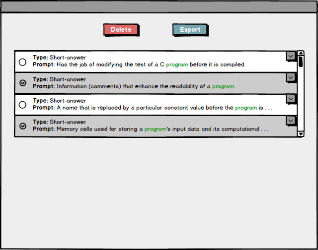
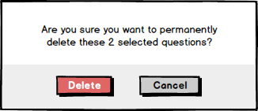
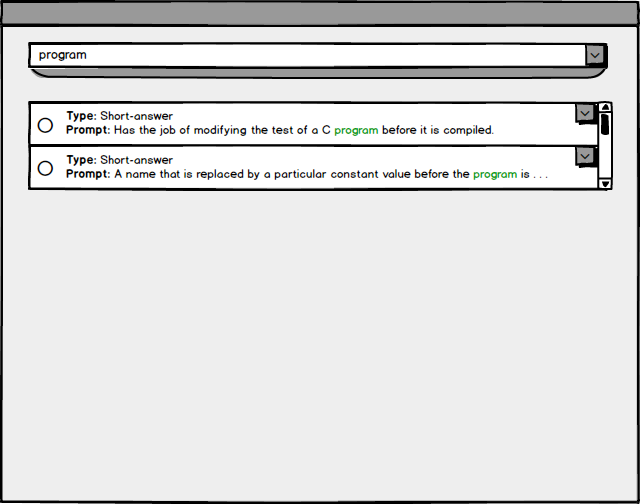

The scenario in this section illustrates an individual user (teacher) deleting selected questions from the question bank. For simplicity this scenario continues where the Search for Questions
scenario left off.
Each question in the question list has a checkbox at the left-side of its listing.
The user clicks on the checkboxes attached to two question listings. The system responds by selecting the question listings, visually indicated by marking the checkboxes and highlighting the listings.

Figure 0: Multiple question listings selected.
When a question is selected, two buttons appear at the top of the screen: one labeled 'Delete', and the other labeled 'Export'.
The user clicks on the 'Delete' button. The system responds by displaying a prompt, shown in the figure below.

Figure 1: Dialog to confirm deletion.
The dialog displays two buttons: one labeled 'Delete' the other labled 'Cancel'. If the user were to click on the 'Cancel' button, the prompt closes and the previous dialog (Figure 0) is displayed.
Instead, the user clicks on the 'Delete' button. The system responds by removing the selected questions from the question bank.

Figure 2: result of deletion.
The prompt has been closed and the question listings associated with the deleted questions have been removed from the question list.
{kind=link}
{kind=link}